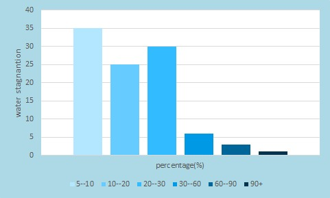

| HOME | SURVEY | ABOUT US |
|---|
MAP DETAILSIn Hyderabad every area will be stagnated even if one day rain falls. The highest stagnated area is about 4% and the lowest stagnated area is about 35%. By the above graph we can say that almost every is stagnated more or less when falls.  |